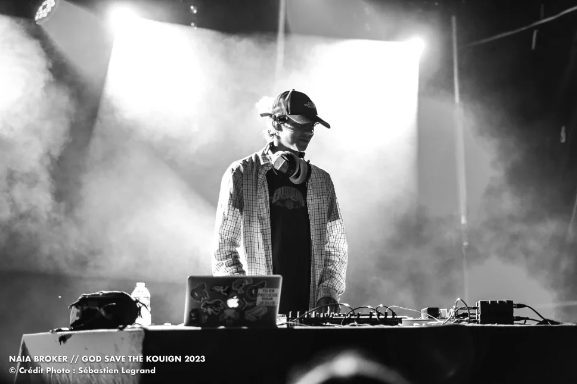

DJ setFranco-australien
DJUNGLE
Batteur depuis l'âge d'un an, ce jeune DJ franco-australien est une machine à rythmes au flow incroyable, nourrie par un appétit pour tous les styles.
Déjà en première partie de Feder, Synapson ou Captain Planet, il passe de la Drum'n'Bass au reggae, de la house à l'électro, du funk à la trance : tout est possible à ses platines.